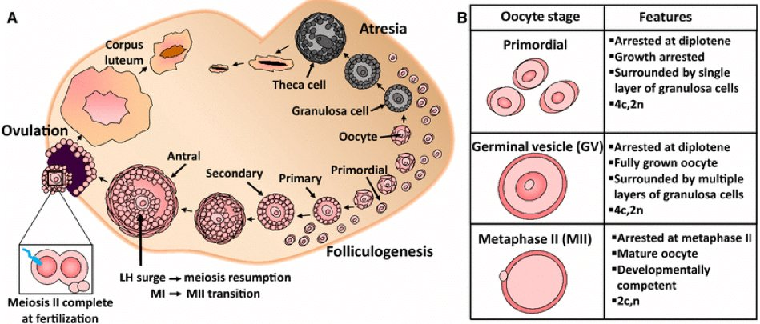
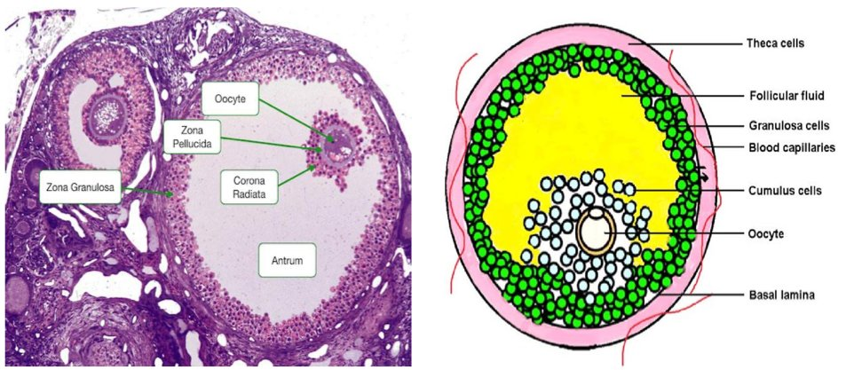
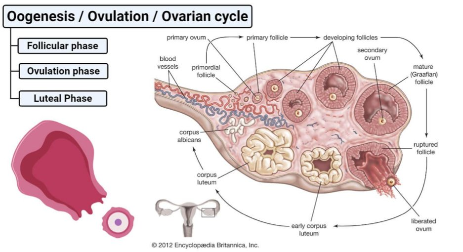
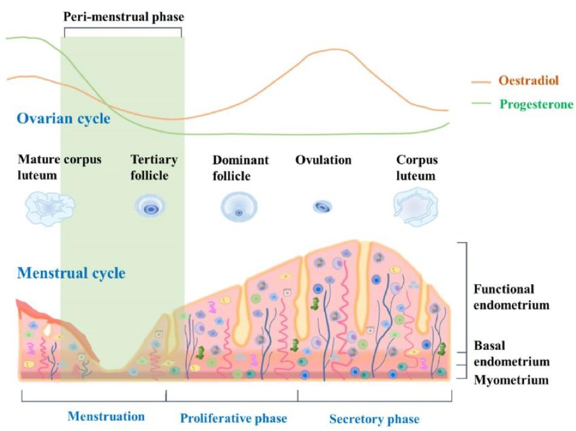
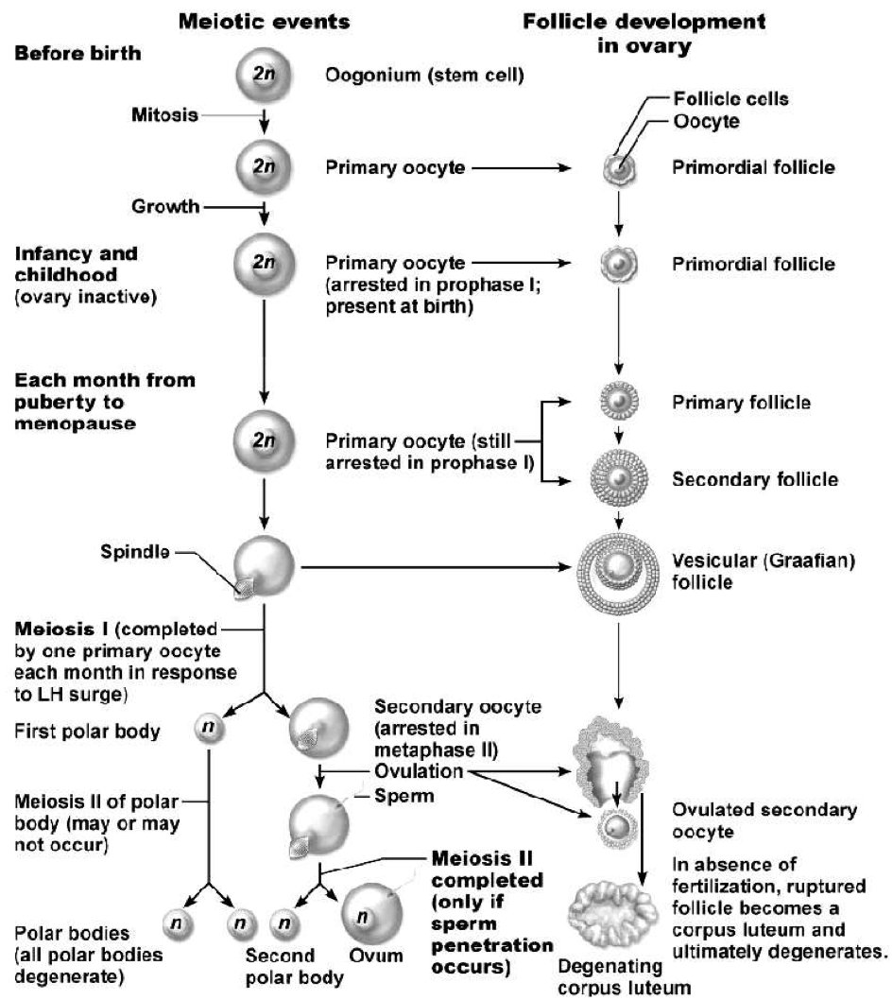

S1 · Embryology · Summary
Oogenesis
- Essentials
- Introduction
- Anatomy
- Folliculogenesis
- Ovulation & corpus luteum
- Menstrual & uterine cycles
- Stages of oogenesis
- Hormonal control
- Exam traps
- Self-check
If you remember only this
- Female reproductive activity is cyclical and limited to puberty → menopause; male activity is continuous.
- Oogenesis has 3 phases — multiplication, growth, maturation (no differentiation phase) — and is completed only at fertilization.
- Oogonia multiply only in fetal life; at birth ~1 million primary oocytes per ovary, arrested in prophase I, each in a primordial follicle (non-renewable stock) → ~400 000 at puberty → < 500 ovulate.
- Follicles: primordial (flattened cells) → primary (cuboidal, zona pellucida, theca) → secondary (granulosa, theca interna/externa) → tertiary (antral cavities, cumulus) → Graafian (single antrum, corona radiata, ~2.5 cm).
- A few hours before ovulation, meiosis I ends: secondary oocyte (n) arrested in metaphase II + 1st polar body. Meiosis II ends only if fertilized.
- Ovulation ~36 h after the LH peak; the oocyte II leaves with zona pellucida, corona radiata and part of the cumulus.
- Corpus luteum: progesterone (lutein cells) + estrogens (theca interna); ~14 days without fertilization, ~3 months with it, then the placenta takes over.
I. Introduction p. 1 2023-24
Oogenesis
The processes that form the female gametes (ova) in the ovaries; it is completed only upon fertilization.
Endocrine function
Production and secretion of female sex hormones, especially estrogens and progesterone.
Exocrine function
= oogenesis: oogonia become female gametes, the secondary oocytes (oocytes II).
| Gonadal activity | Female | Male |
|---|---|---|
| Duration | Limited to puberty → menopause | Declines gradually with age but never completely ceases |
| Pattern | Cyclical | Continuous |
II. Anatomy of the female reproductive system p. 2–3
Two gonads (ovaries) + genital tract: Fallopian tubes (oviducts), uterus, vagina.
| Organ | Key facts |
|---|---|
| Ovary | In the pelvic cavity, ~1 cm wide × 3 cm long, partly covered by the fimbriae of the tube. Section, from outside in (as listed in the handout): tunica albuginea, germinal epithelium, cortex (periphery: all stages of folliculogenesis), medulla (centre: loose connective tissue rich in blood and lymph vessels and nerves). |
| Fallopian tubes | 10–14 cm; connect the ovaries (partly covered by them) to the uterus; the epithelium of the lumen varies with the menstrual cycle. |
| Uterus | Pear flattened front-to-back, 6–7 cm × ~4 cm. Wall, outside → in: serosa, myometrium (thick smooth muscle), endometrium (mucosa whose thickness, vascularization and secretion vary with the cycle). |
| Cervix | Projects into the upper vagina; its glands secrete cervical mucus, which selects and facilitates the passage of spermatozoa into the uterine cavity. |
| Vagina | Canal of copulation and sperm deposition; sensitive to estrogen and progesterone levels; basal lamina + dense connective tissue + muscularis. |
| External organs | Labia majora and minora (fatty folds, sweat and sebaceous glands). Accessory glands: bulbourethral, Bartholin's, cervical glands. |
III. Folliculogenesis p. 3–5 2022-23 · 2024-25 · 2025-26
Definition
A cyclic process of the ovarian cortex: progressive maturation of the ovarian follicle (somatic cells enclosing an immature primary oocyte), from the
primordial follicle to either ovulation or follicular atresia.
- Starts around the 7th month of gestation (primordial follicles). At birth: ~1 million primordial follicles per ovary.
- Birth → puberty: folliculogenesis quiescent, ~60% of the reserve degenerates → ~400 000 per ovary at puberty.
- Puberty → menopause: once a month, just after menstruation, ~20 primordial follicles resume growth; usually only one matures, the others degenerate.
| Follicle | Oocyte | Follicular cells | Other features |
|---|---|---|---|
| Primordial | Primary oocyte, prophase I | A few flattened cells | — |
| Primary | Large primary oocyte, prophase I | Single layer of cuboidal cells | Zona pellucida appears; undifferentiated theca; Slavjanski membrane between theca and follicular cells |
| Secondary | Primary oocyte | Several layers = granulosa | Theca → theca interna (cellular) + theca externa (fibrous) |
| Tertiary (cavitary) | Large primary oocyte migrates to a thickening of the granulosa = cumulus oophorus | Fluid-filled antral cavities in the granulosa | Almost mature size, oval; theca interna cells start secreting estrogens |
| Mature (Graafian) | A few hours before ovulation: secondary oocyte (n) in metaphase II + 1st polar body (stays inside the zona pellucida) | Antral cavities fuse → one antrum folliculi (follicular fluid) | ~2.5 cm; innermost cumulus layer next to the zona pellucida → corona radiata |


IV. Ovulation, corpus luteum, corpus albicans p. 5–7 2022-23 · 2024-25 · 2025-26
Ovulation
- Triggered by a surge of LH and FSH (anterior pituitary) and the pressure of the follicular fluid.
- The secondary oocyte, with the zona pellucida, corona radiata and part of the cumulus oophorus, is expelled and enters the outer third of the Fallopian tube.
- Timing: about 36 hours after the LH peak.
- The emptied follicle collapses = ruptured follicle → corpus luteum.
Corpus luteum (temporary endocrine gland) — luteinization
Slavjanski membrane disappears→thecal capillaries invade the granulosa→follicular cells → luteinized (lutein) cells→lutein pigment = yellow colour
- Lutein cells (from the granulosa) secrete progesterone; the theca interna keeps producing estrogens.
| No fertilization | Fertilization | |
|---|---|---|
| Name | Menstrual (progestational) corpus luteum | Gestational corpus luteum |
| Lifespan | About 14 days (p. 6) — "regresses 10–12 days later" (p. 7) | Persists about 3 months, then degenerates; the placenta takes over steroid production |
Corpus albicans: the degenerated corpus luteum, later phagocytosed by macrophages.

Factors influencing ovulation p. 6–7
- Obesity (hormonal imbalances) and low body weight / eating disorders (anorexia, bulimia).
- Psychological stress: temporary anovulation (the hypothalamic–pituitary axis is under central nervous control).
- Intense physical activity may delay ovulation.
- Ionizing (X-rays, uranium mines, nuclear plants) and non-ionizing radiation (UV, radiofrequencies, electromagnetic fields of cathode-ray screens).
- These disorders are generally reversible (e.g. regular cycles after pregnancy). Lifestyle: stop smoking, balanced diet, less stress; pharmacological ovulation induction is often enough.
V. Menstrual and uterine cycles p. 7–8 2022-23
- Without fertilization, the progestational corpus luteum regresses → sharp fall in progesterone and estrogens → the endometrium detaches → menstruation.
- 28 days is only a conventional average; real durations vary a lot. The first day of menstruation starts a new cycle.
| Days | Uterine phase | Endometrium |
|---|---|---|
| 0–4 | Menstrual | Shed, leaving a thin residual layer |
| 4–14 | Proliferative | Regenerates and thickens; tubular glands elongate; vessels grow |
| 14–28 | Secretory | "Uterine lace": spiral arteries, tortuous glands, more glycogen to nourish the embryo; maximal thickness, ready for implantation |

VI. Stages of oogenesis p. 8–10 2022-23 · 2023-24 · 2024-25 · 2025-26
| Phase | When | What happens |
|---|---|---|
| 1. Multiplication | Embryonic and fetal life | Oogonia (diploid stem cells; small, spherical; in the cortical zone of the embryonic ovary) divide by mitosis → primary oocytes (2n, 2q). Most oogonia degenerate around the 7th month. Each primary oocyte immediately gets follicular cells + a peripheral membrane (= primordial follicle), doubles its DNA (4q) and enters meiosis I, arrested in prophase I. At birth: ~1 million, non-renewable. |
| 2. Growth | Until follicular maturation | Marked increase in size of the primary oocyte; intense RNA and protein synthesis (needed for fertilization and early development). Many follicles degenerate before puberty (~400 000 left; < 500 ovulate in a lifetime). Meiosis I is not completed before puberty because of a meiosis-inhibiting factor from follicular cells. |
| 3. Maturation | Each month, puberty → menopause, at ovulation | Primary oocyte (2n, 4q) completes meiosis I → secondary oocyte (n, 2q) + 1st polar body (n, 2q); highly unequal (oocyte II keeps most cytoplasm). Meiosis II starts at once and arrests in metaphase II. |
If fertilized
The spermatozoon activates the oocyte II → meiosis completed → mature ovum (ovotide) + 2nd polar body.
If not fertilized
The oocyte stays in metaphase II, degenerates rapidly and is expelled at the end of the cycle (10–12 days after ovulation).
Oocyte maturation vs spermatogenesis — 3 specific features
- Meiosis is incomplete, unequal and prolonged;
- cytoplasmic maturation is synchronous with nuclear maturation;
- it is closely tied to folliculogenesis.

Memory trick
Two "pauses": Prophase I = Pre-birth to Puberty; Metaphase II = waiting for the Male gamete.
VII. Hypothalamic–pituitary control p. 10–11 2022-23 · 2024-25 · 2025-26
| Hormone | Source | Role / timing |
|---|---|---|
| GnRH | Hypothalamus | Released in a pulsatile pattern (2–3 pulses per hour); stimulates pituitary gonadotropins |
| FSH | Anterior pituitary | Rises in the follicular (preovulatory) phase, peaks with LH at ovulation; promotes follicular growth and estradiol production |
| LH | Anterior pituitary | Main surge ~36 h before ovulation; induces progesterone secretion |
Progesterone⊣LHEstrogens⊣FSH
Ovarian hormones exert negative feedback on gonadotropin secretion: progesterone inhibits LH, estrogens inhibit FSH.
Exam traps
False statements that keep coming back
- "The antral follicle is compact and solid / has no thecae / is the mature pre-ovulatory follicle" — false: its defining feature is the enlarging follicular cavity. 2022-23
- "The secondary follicle contains a secondary oocyte" — false: a primary oocyte; the oocyte II only appears a few hours before ovulation. 2024-25
- Graafian follicle section called "pre-antral", or its theca interna called "fibrous" — false: single large antrum; theca interna is cellular, externa fibrous. 2024-25 · 2025-26
- "Ovulation is triggered by a drop in FSH / by estrogens + progesterone" — false: the LH surge. 2022-23
- "At ovulation the primary oocyte divides into two identical cells" — false: unequal division, oocyte II + 1st polar body. 2022-23
- "The corpus luteum degenerates if there is fertilization / becomes a Graafian follicle" — false. 2022-23
- "After fertilization the corpus luteum regresses within days / 12–14 days, replaced by the placenta" — false: it persists ~3 months. 2025-26
- "Progesterone is (mainly) secreted in the pre-ovulatory phase" — false (keyed false twice): the corpus luteum makes it after ovulation. 2024-25 · 2025-26
- "The hypothalamus secretes hCG"; "GH / hCG are the pituitary hormones acting on the ovary" — false: GnRH; FSH and LH. 2022-23 · 2024-25
- "Proliferation" is a phase of gametogenesis — false. Meiosis belongs to the maturation phase. 2024-25
- Menstrual cycle order: estrogenic phase → ovulation → progestational phase (not "ovulation – luteal – progestational"). 2022-23
Official keys vs this handout
EMD1 2023-24 Q1 keys "in women, the differentiation stage is absent" as correct, which matches this handout (3 phases). But EMD1 2022-23 Q4 ("the differentiation phase of
oogenesis…") is keyed "takes place during intrauterine life" rather than "does not exist". Learn the 3 phases; if that question returns, the 2022-23 key is what was expected then.
Self-check
Two differences between female and male gonadal activity?
Female: limited to puberty–menopause, cyclical. Male: declines with age without stopping, continuous.
Where in the ovary does folliculogenesis happen, and when does it start?
In the cortex; primordial follicles form from about the 7th month of gestation.
How many follicles at birth, at puberty, and how many ovulate?
~1 million per ovary at birth; ~400 000 at puberty (60% lost); fewer than 500 ovulate.
What appears first in the primary follicle?
Single layer of cuboidal cells, zona pellucida, undifferentiated theca, Slavjanski membrane.
Theca interna vs theca externa?
Interna: cellular, secretes estrogens (from the tertiary follicle). Externa: fibrous.
What is the corona radiata?
The innermost layer of the cumulus oophorus, next to the zona pellucida (Graafian follicle).
What exactly leaves the ovary at ovulation, and where does it go?
The secondary oocyte (metaphase II) with zona pellucida, corona radiata and part of the cumulus → outer third of the Fallopian tube.
What makes the corpus luteum yellow and what does it secrete?
Lutein pigment of the luteinized cells; progesterone (lutein cells) and estrogens (theca interna).
Days and features of the 3 uterine phases?
0–4 menstrual (shedding); 4–14 proliferative (regeneration, gland elongation, vessels); 14–28 secretory (uterine lace, glycogen, max thickness).
Give chromosomes and DNA of: primary oocyte, secondary oocyte, 1st polar body.
2n, 4q · n, 2q · n, 2q.
Why don't primary oocytes finish meiosis I before puberty?
A meiosis-inhibiting factor secreted by the follicular cells.
What happens to the oocyte II with and without fertilization?
With: completes meiosis → ovum + 2nd polar body. Without: stays in metaphase II, degenerates, expelled at the end of the cycle.
Which ovarian hormone inhibits LH and which inhibits FSH?
Progesterone inhibits LH; estrogens inhibit FSH.